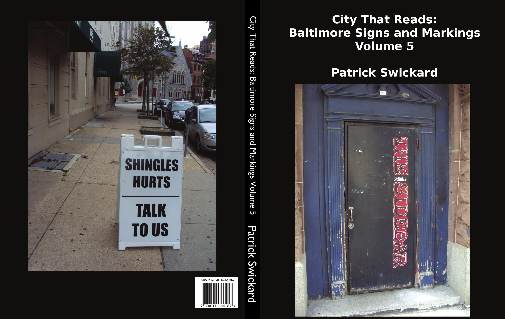
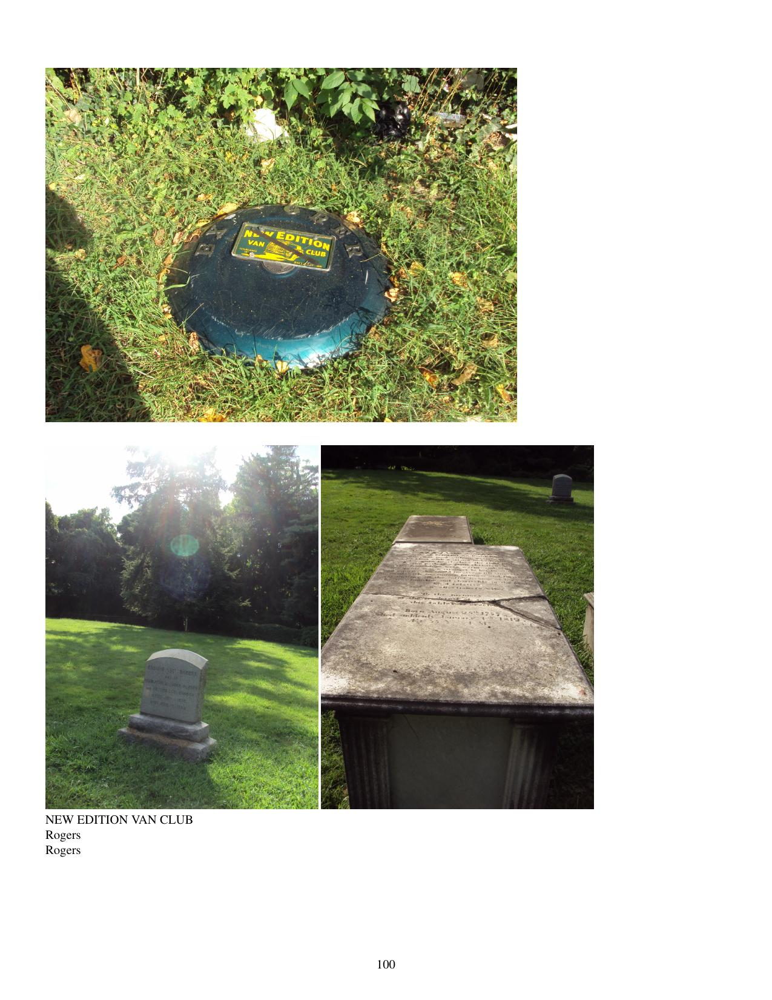

Hats off to the new age hairstyle made of bones
Hats off to the use of hats as megaphones
Speak softly, drive a Sherman tank
Laugh hard, it's a long way to the bank
Do you sing like Olive Oyl on purpose?
You guys must be into the Eurythmics
For every one with dollar signs in his eyes
There must be hundreds that look at you as if you're some kind of
Rhythm section want ad
- They Might Be Giants
Scenes near city hall. Street bananas. Korean war relics. Little Italy. Street festival markings. The Walters puts art on the streets. Barbers and laundromats. Band solicitations. Read Street. Vandel van. Geico hubris. Wrecked cars provide a canvas. Code violations. North Avenue. Howard Street Bridge. Sidewalk chalk galore.
Includes:
Random sample page:
